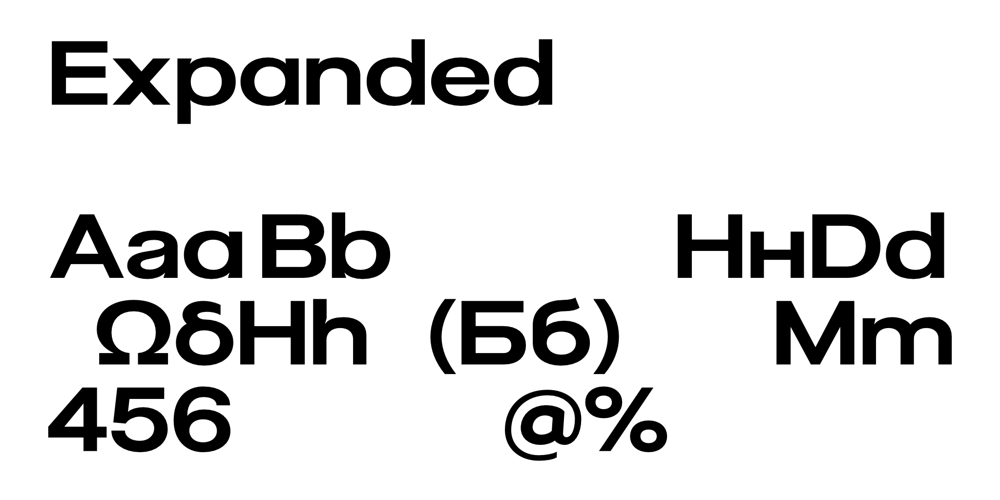
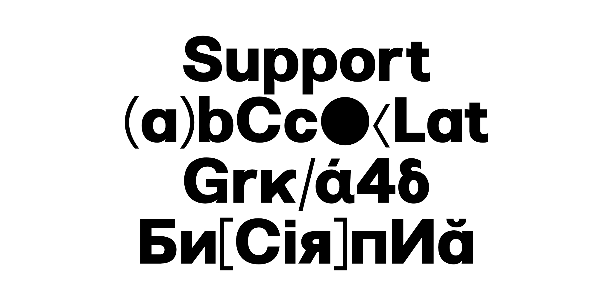

Pliant typeface was conceived to address specific internal design needs. Built on the Swiss typographic tradition, Pliant offers a neutral and universal structure, making it suitable for a wide range of uses. Its design ensures clarity and consistency, especially in continuous text where legibility is a priority.
A distinctive feature of Pliant is its spacing, intentionally narrower than in many other typefaces. This decision was guided by practicality: it is easier to open up tight spacing to improve readability than to reduce spacing that is already too loose. This approach gives designers more control and flexibility when adapting the font to different contexts.
Considering these design variables, shapes, spacing, proportions we developed an additional variant aimed at headline usage. Non Pliant Normal works well for this purpose, but we felt the need for a complementary version that could pair seamlessly with it. The result is an extended variant that maintains the original spirit of Pliant while offering broader letterforms and slightly more pronounced details. This balance allows it to perform strongly in display settings without losing the rational qualities that define the family.
To contribute, see github.com/TheJonassss/Pliant.

